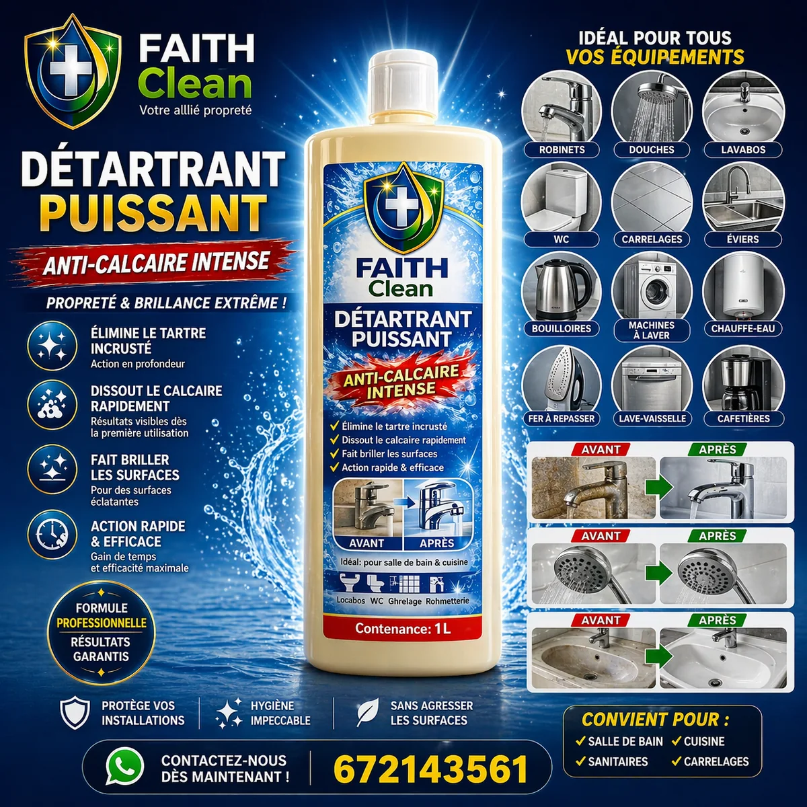
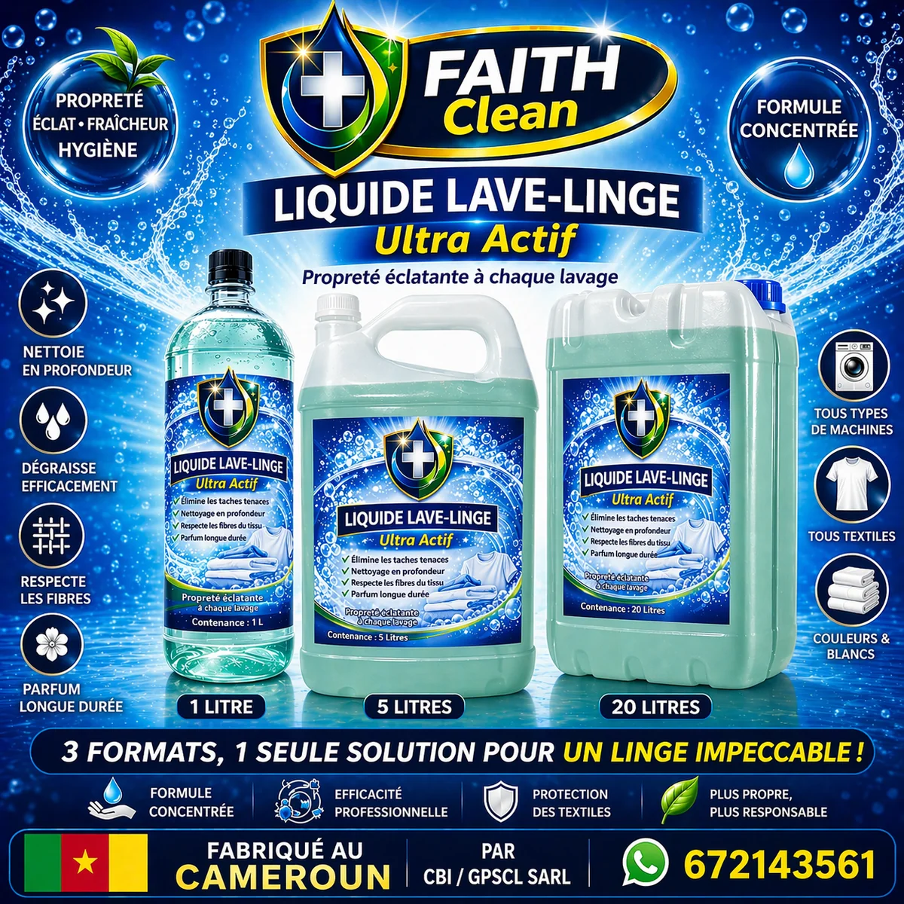
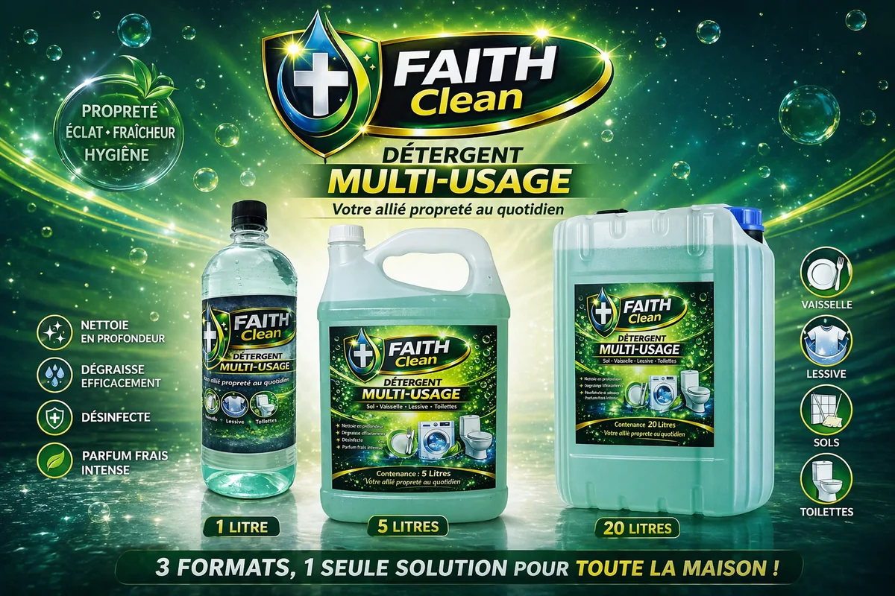
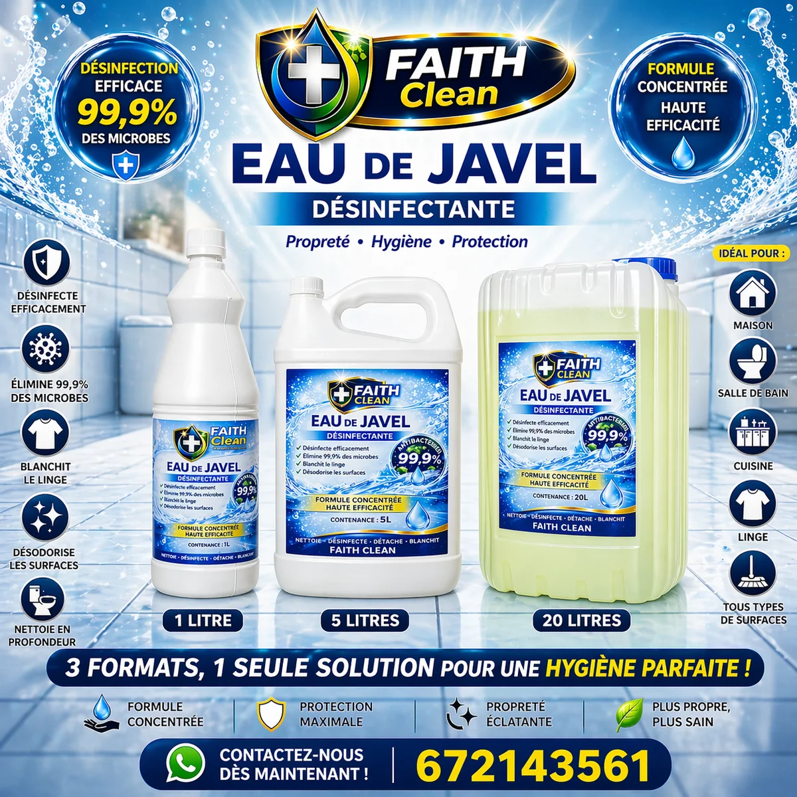
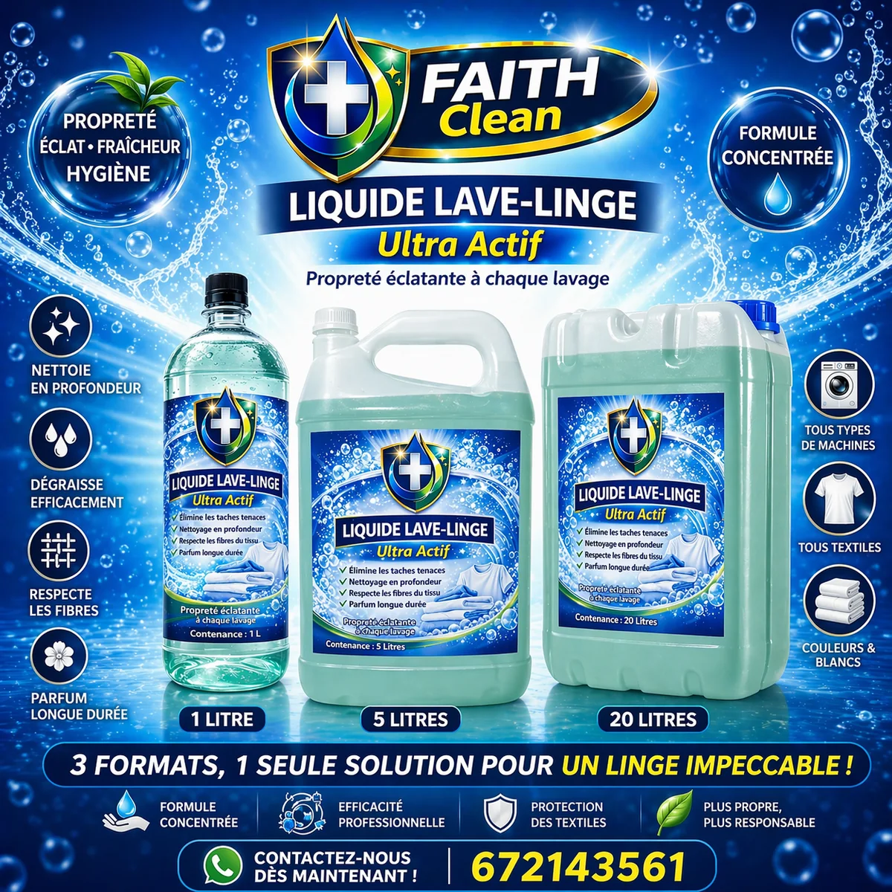
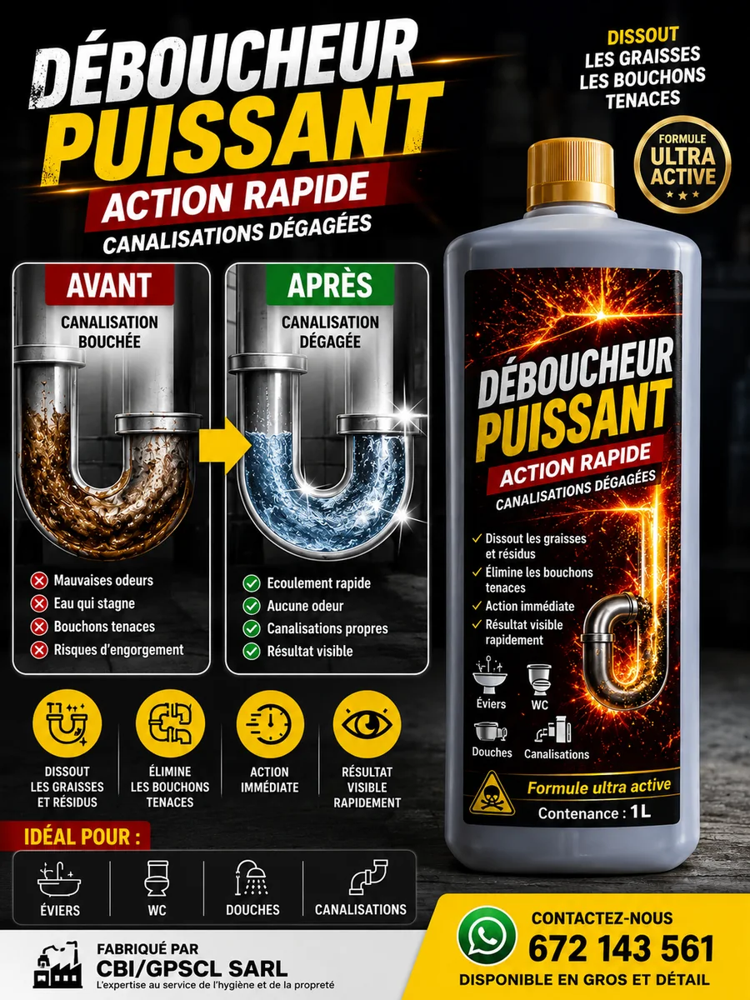

Bienvenue dans notre univers Entretien & Maison
Découvrez les produits d'entretien et de nettoyage proposés par BOUTIQUE CBI à Douala, au Cameroun. Nous vous accompagnons dans l'entretien de votre maison, de vos surfaces et de vos équipements.
Nos produits de nettoyage

Détartrant
Un produit destiné à accompagner l'entretien et le nettoyage des surfaces concernées. Respectez les indications figurant sur l'emballage.
Prix : nous consulter

Détergent Liquide Faith Clean
Un produit pour accompagner le nettoyage et l'entretien quotidien.
Prix : nous consulter

Détergent Liquide
Un produit destiné au nettoyage et à l'entretien quotidien.
Prix : nous consulter

Eau de Javel
Un produit destiné à l'entretien et à la désinfection, à utiliser conformément aux précautions indiquées sur l'emballage.
Prix : nous consulter
Retrouvez notamment les produits de la marque Faith Clean, conçus pour accompagner vos besoins quotidiens de nettoyage et d'entretien domestique.

Lave Linge
Un produit destiné à accompagner le lavage et l'entretien du linge.
Prix : nous consulter
Déboucheur Faith Clean

Déboucheur Faith Clean
Un produit destiné à l'entretien des canalisations. Respectez les précautions d'utilisation indiquées sur l'emballage.
Découvrez notre déboucheur Faith Clean pour vos besoins d'entretien des canalisations. Consultez les indications figurant sur le produit et respectez les précautions d'utilisation.
Pourquoi choisir BOUTIQUE CBI ?
- Des produits pour l'entretien de la maison.
- Une boutique basée à Douala, Cameroun.
- Des commandes simples par WhatsApp.
- Un service destiné aux particuliers et aux professionnels.
Commander vos produits
Contactez notre équipe pour connaître les disponibilités, les prix et les conditions de livraison.
Commander sur WhatsAppDécouvrez toute notre boutique
Retrouvez également nos parfums, soins capillaires, soins visage et corps, formations et livres professionnels.
Visiter BOUTIQUE CBI